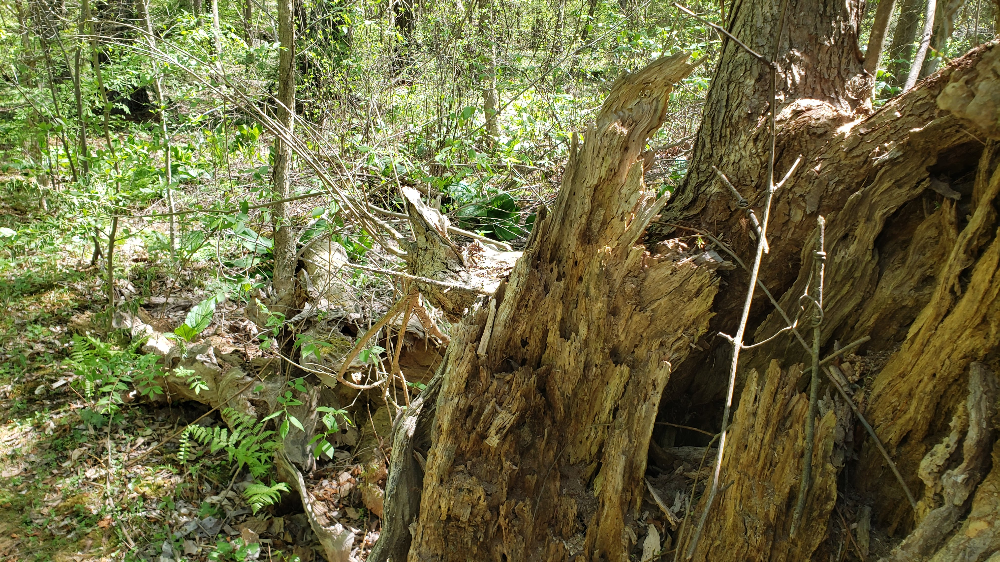
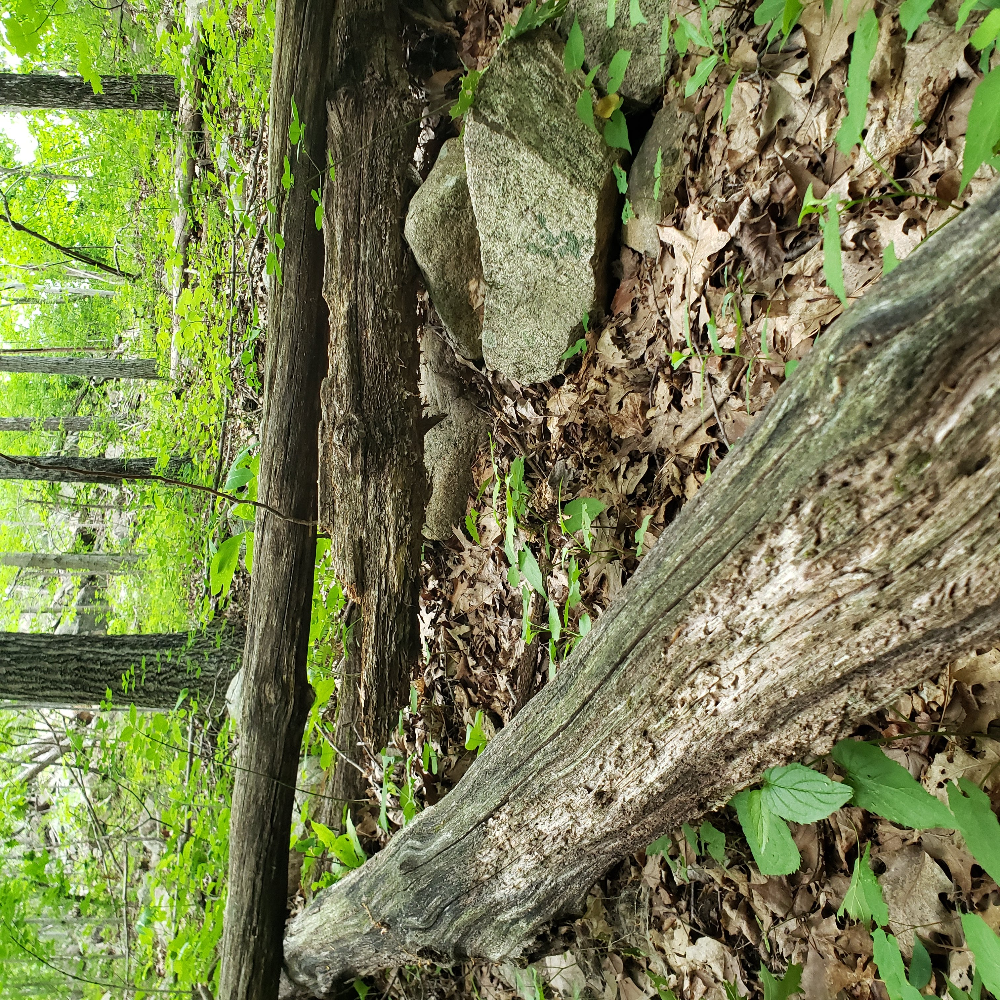
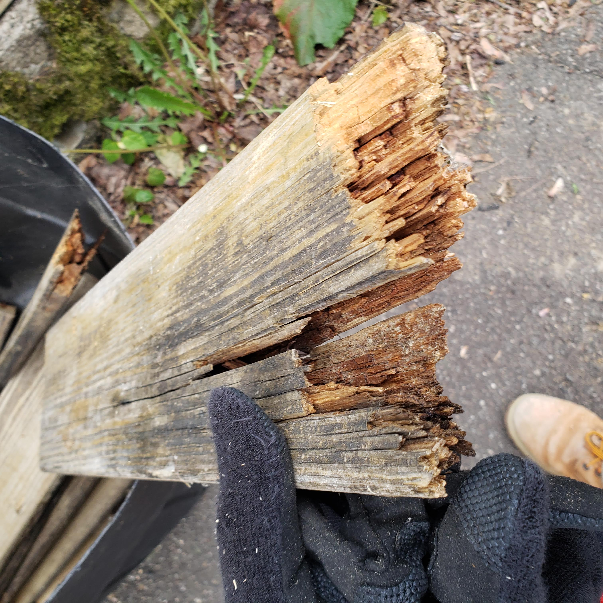
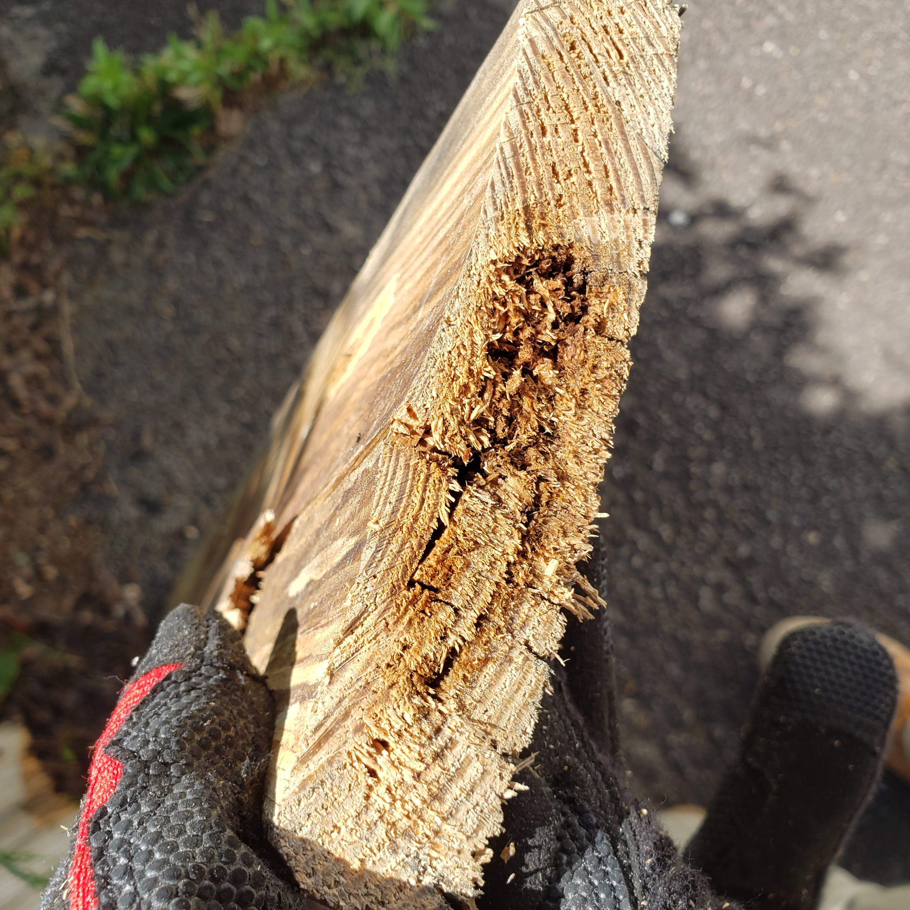
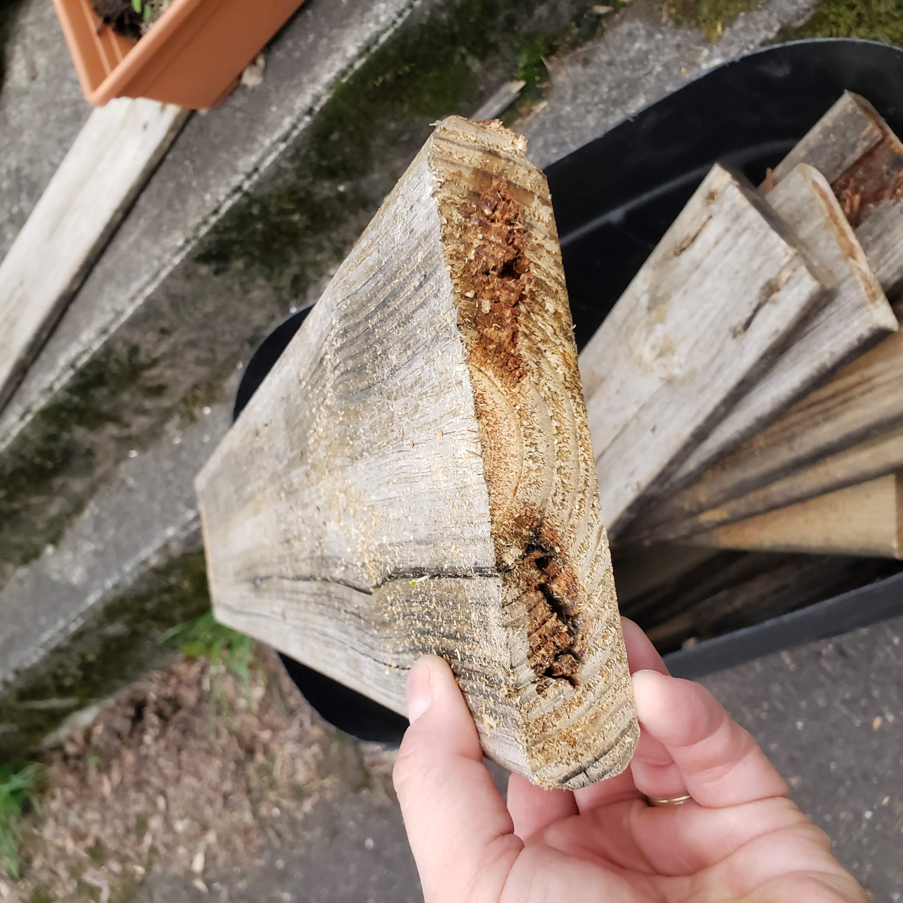
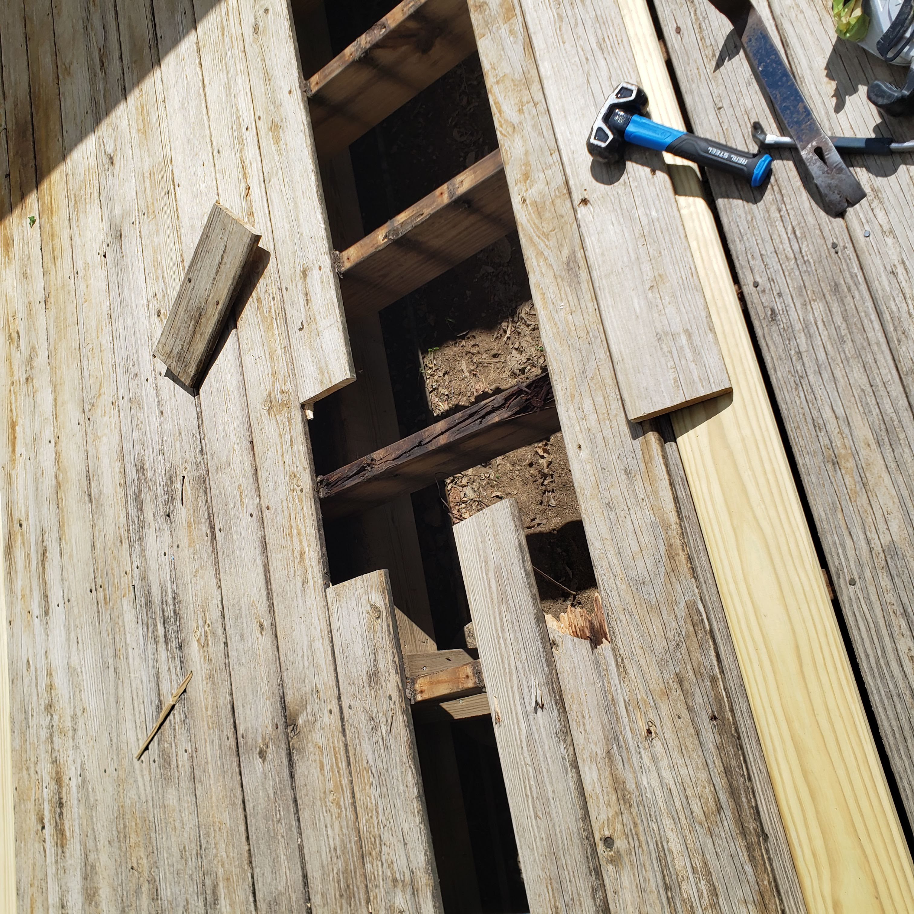
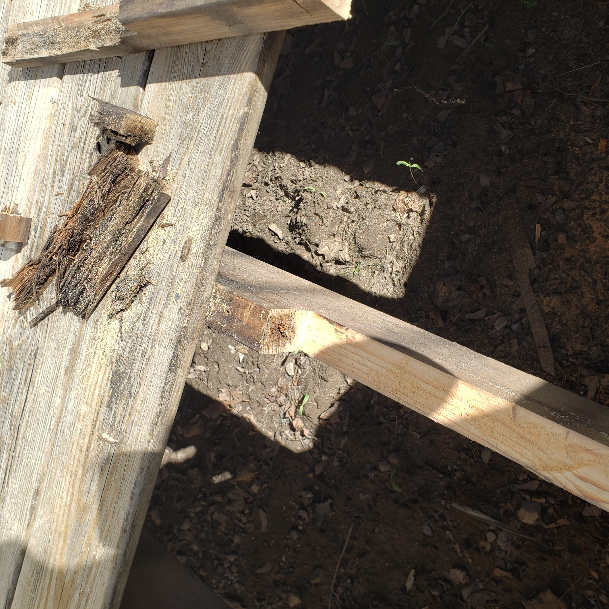
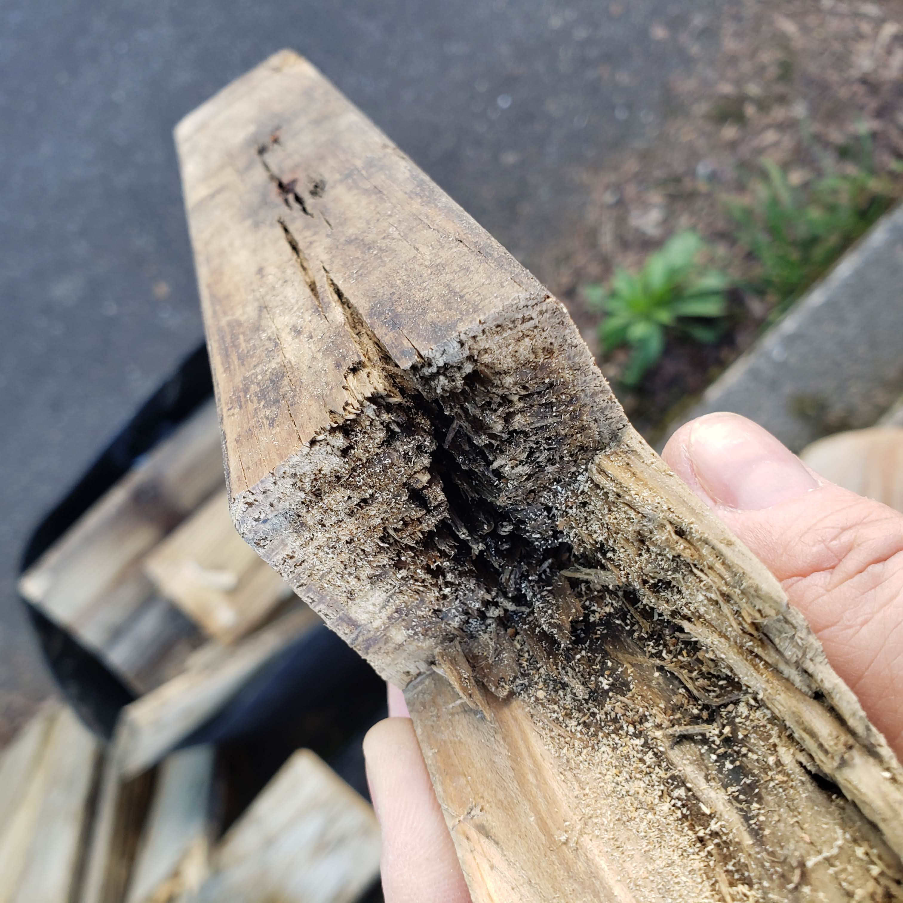

Walk through almost any forest in northern New Jersey and you'll see it everywhere: fallen trees, decomposing logs, moss-covered stumps slowly dissolving back into the earth. It looks peaceful, even natural — because it is. Nature has been recycling dead organic material for millions of years using fungi, bacteria, insects, and moisture to break down anything that's no longer living.

Your deck is participating in the same process. Just more slowly.
That's not a flaw in the construction or a sign of bad workmanship. It's biology. And understanding it is the difference between being ahead of your deck's deterioration or behind it.
"In nature, dead organic material is always being reclaimed. Outdoor maintenance is ultimately the ongoing process of slowing that reclamation down."
The Assumptions That Get Homeowners in Trouble
Most people inherit a set of reasonable-sounding beliefs about outdoor wood that turn out to be wrong in consequential ways:
- Pressure-treated wood is waterproof. It isn't. It still absorbs water, swells, dries, and cracks. Wherever moisture lingers, biology follows.
- Pressure-treated wood is permanent. It resists biological attack far better than untreated lumber. Resistance is not immunity — there's a meaningful difference between the two.
- Gray weathered wood is structurally sound. Color tells you almost nothing about internal integrity. Two boards can look identical while one crumbles when probed.
- Visible damage means hidden damage doesn't exist. Structural rot progresses for years in hidden areas before any surface symptom appears. The soft spot you feel underfoot is rarely where the problem started.
A Deck Is Basically a Horizontal Fallen Tree
That may sound reductive, but biologically it's accurate.
A healthy living tree has active defenses. It transports nutrients, produces protective chemistry, isolates infections, seals wounds, and compartmentalizes decay to limit its spread. Those defenses are biological — they require the tree to be alive.
Once lumber is milled from a living tree, those defenses are gone permanently. From that moment forward, moisture and environmental conditions determine how quickly nature begins working on it. Whether that wood ends up on a forest floor or as part of your deck frame, the biological process is the same. Just at different speeds, under different conditions.


What Pressure Treatment Actually Does — and Doesn't Do
Pressure treatment is one of the most useful innovations in outdoor construction, and one of the most misunderstood at the point of sale.
Treated lumber isn't a special species of wood. It's typically Southern Yellow Pine that has been placed in a sealed cylinder, evacuated of air and moisture, then saturated with preservative chemicals under high pressure — forcing protection deep into the wood fibers. The result is lumber that resists fungal decay and insect attack significantly better than untreated wood would under the same conditions.
Pressure-treated lumber is rot resistant. It is not rot proof. That distinction becomes significant over the 15–30 year lifespan of an outdoor structure — and it's almost never explained when the lumber is sold.
Preservatives slow biological attack. They don't waterproof the wood, they don't prevent seasonal expansion and contraction, and they don't protect the exposed interior wood at cut ends and fastener holes — which are often the most vulnerable points on any structure. Fresh pressure-treated boards are also typically still quite wet when sold; the treatment process saturates them, and they need time to dry before coating or sealing.
What Actually Causes Rot
Wood rot is primarily caused by fungi — not plants, not bacteria. Fungi survive by breaking down organic material externally, releasing enzymes and chemical compounds that digest the structural components of wood: cellulose, hemicellulose, and lignin. Those are the materials that give wood its strength and rigidity.
In plain terms: the fungi are slowly digesting the wood's structural skeleton.
Rot fungi thrive under specific conditions — damp environments, slow drying, poor ventilation, accumulated organic debris, repeated wetting. Which is a fairly accurate description of what happens beneath most deck boards year-round in New Jersey.


Why the Worst Damage Is Almost Always Hidden
Most decks don't fail because of direct rain exposure. They fail because moisture gets trapped — and the places where it gets trapped are precisely the places you can't see without removing boards.
The tops of deck joists sit in permanent shadow beneath the surface. Leaves, dirt, and organic debris collect on them after every storm. Rain soaks in. The sun never reaches them directly. Airflow is minimal. That combination — chronic moisture with no drying cycle — is near-ideal for fungal colonization.
Because this framing is hidden, deterioration progresses silently for years. A deck can look perfectly acceptable from above — no obvious soft spots, no visible movement — while the structural framing underneath is significantly compromised.


By the time soft spots appear underfoot, screws loosen, railings wobble, or boards visibly sag — the underlying deterioration is usually already extensive. These are the last signs to appear, not the first signal that something is wrong.

Why Gray Wood Confuses People
Many homeowners see weathered gray lumber on an older deck and read it as aging — rough-looking but probably fine. The driftwood association makes this worse: people see gray driftwood on beaches and assume weathered gray wood must be naturally durable.
But driftwood exists in a completely different environment. Heavy UV, constant abrasion, salt exposure, and strong drying cycles on an open beach produce a very different outcome than the same wood would experience under the shade of trees in Morris County — with wet leaves sitting on the framing for six months of the year.
Gray color alone says almost nothing about structural condition. Sunlight bleaches wood gray. Surface fungal activity darkens it. Oxidation, moisture cycling, and biological staining all produce similar visual results with completely different structural implications. Two boards side by side can look identically weathered — one retaining full strength, one crumbling when probed.
How Long Decks Actually Last — and What Determines It
Pressure-treated decks can last anywhere from 10 to 30-plus years. That range is almost entirely determined by maintenance, design, drainage, and debris management — not solely by whether the lumber was treated. Some decks in Morris County built in the 1990s are still structurally sound. Others from the same decade have been replaced twice.
What Maintenance Actually Does
This is where most maintenance conversations go wrong: outdoor cleaning is treated as cosmetic. Black staining, green algae, mildew — these get addressed because they look bad. Cleaning does help. Sodium hypochlorite-based solutions kill active surface organisms, loosen biological residue, and improve surface sanitation. That has real value.
But cleaning alone doesn't solve a moisture problem. If the underlying conditions persist — trapped debris, poor airflow, inadequate drainage, excessive shade — biological growth returns. The cleaning addressed a symptom. The root cause is still there.
The activities that actually extend lifespan are about moisture management:
- Debris removal from joist tops — this is where chronic moisture drives hidden rot, and it requires removing boards or accessing the framing directly
- Drainage management — ensuring water moves off the structure and away from the foundation, not toward it or under it
- Airflow clearance — adequate space beneath the deck allows drying cycles that interrupt fungal establishment between rain events
- Cut-end and fastener treatment — exposed interior wood at saw cuts and drilled holes has no preservative protection and is the most vulnerable surface on any treated board
- Proactive framing inspection — physically probing joist tops and ledger connections before soft spots appear above, not after
The goal of outdoor maintenance isn't a deck that looks new. It's slowing deterioration, reducing the conditions fungi need to thrive, and catching structural issues before a repair becomes a full rebuild.
Pressure-treated lumber is one of the most useful materials in outdoor construction. It's not magic. Nature is patient, and given enough moisture, trapped debris, poor airflow, and time, the same biological systems that recycle fallen trees in New Jersey forests will slowly begin reclaiming outdoor structures too. The difference is that a homeowner — or a contractor who knows what to look for — can dramatically slow that process.
If you're in Morris, Passaic, or Bergen County and want to know what's actually happening under your deck — not guessing based on how it looks from above — that's exactly the kind of assessment we do at Great Precision Property Services. Paid deck assessments, structural evaluation, and repair work done to last. Call us at 973-221-3464 or request a quote online.
References & Further Reading
- USDA Forest Products Laboratory — Wood Handbook: Wood as an Engineering Material — research.fs.usda.gov
- American Wood Protection Association (AWPA) — awpa.com
- AWPA — Use Category System for Treated Wood — awpa.com/standards/ucs
- EPA — Overview of Wood Preservative Chemicals — epa.gov
- American Wood Council — Treatment of Cut Ends in Pressure-Treated Wood — awc.org
- TreatedWood.com — Preservatives & Treatment FAQs — treatedwood.com